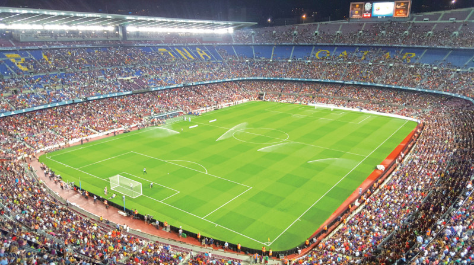

캄프누(프로 축구팀 FC 바르셀로나 홈구장으로 세계에서 11번째로 큰 경기장이다.)


암스테르담(자전거가 사람 수보다 많고, 하루 평균 25개의 공연이 열리는 유럽에서 가장 힙한 도시)

반 고흐 미술관(드로잉과 스케치를 포함한 700점 이상의, 세계 최대 고흐 컬렉션을 소장한 박물관.)

아담 전망대(아담토른 21층에 85m 높이에서 암스테르담 시내를 360도로 내려다볼 수 있는 전망대)